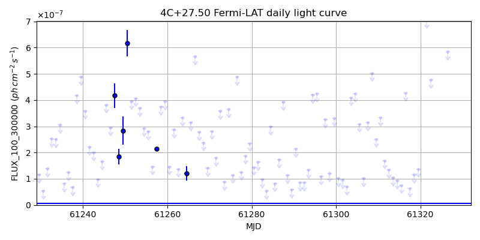
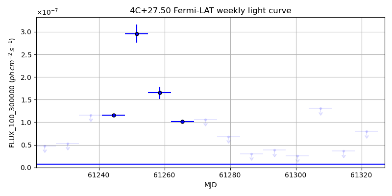
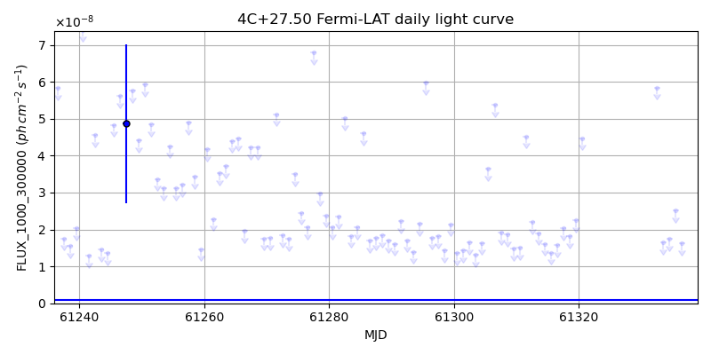
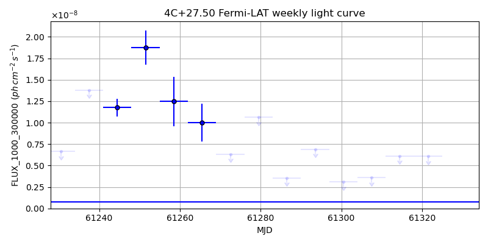

LAT Lightcurve site: https://fermi.gsfc.nasa.gov/ssc/data/access/lat/msl_lc/source/4C_p27d50
NED: Query
Time of last update of this page: UT: 2026-10-30 15:29 (MJD: 61343.646)
| Property | Value |
|---|---|
| R.A. | 23:21:59.76 |
| Dec. | 27:32:45.6 |
| z | 1.255 |
| 3FGL SpectrumType | PowerLaw |
| 3FGL PL Index | 2.28 |
| 3FGL Flux_100_300000 | 1.52e-08 1 / (s cm2) |
| 3FGL Flux_1000_300000 | 7.91e-10 1 / (s cm2) |
| 3FGL Flux >200 GeV | 8.84e-13 1 / (s cm2) |
| 3FGL Extrap. Crab >200 GeV | 0.00 |
| 3FGL Flux After EBL Absorption >200GeV | 4.15e-15 1 / (s cm2) |
| 3FGL EBL Crab Fraction >200GeV | 0.00 |

| MJD | dMJD | Flux | dFlux | Frac3FGL | FracCrab>200GeV | EBLFracCrab>200GeV |
|---|---|---|---|---|---|---|
| 61338.50 | 0.50 | 5.67e-08 | 0.00e+00 | 0.00 | 0.00 | 0.00 |
| 61339.50 | 0.50 | 5.83e-08 | 0.00e+00 | 0.00 | 0.00 | 0.00 |
| 61340.50 | 0.50 | 1.17e-07 | 0.00e+00 | 0.00 | 0.00 | 0.00 |
| 61341.50 | 0.50 | 1.15e-07 | 0.00e+00 | 0.00 | 0.00 | 0.00 |
| 61342.50 | 0.50 | 1.53e-07 | 0.00e+00 | 0.00 | 0.00 | 0.00 |

| MJD | dMJD | Flux | dFlux | Frac3FGL | FracCrab>200GeV | EBLFracCrab>200GeV |
|---|---|---|---|---|---|---|
| 61307.50 | 3.50 | 1.31e-07 | 0.00e+00 | 0.00 | 0.00 | 0.00 |
| 61314.50 | 3.50 | 3.67e-08 | 0.00e+00 | 0.00 | 0.00 | 0.00 |
| 61321.50 | 3.50 | 7.97e-08 | 0.00e+00 | 0.00 | 0.00 | 0.00 |
| 61328.50 | 3.50 | 6.09e-07 | 0.00e+00 | 0.00 | 0.00 | 0.00 |
| 61335.50 | 3.50 | 3.82e-08 | 0.00e+00 | 0.00 | 0.00 | 0.00 |

| MJD | dMJD | Flux | dFlux | Frac3FGL | FracCrab>200GeV | EBLFracCrab>200GeV |
|---|---|---|---|---|---|---|
| 61338.50 | 0.50 | 1.65e-08 | 0.00e+00 | 0.00 | 0.00 | 0.00 |
| 61339.50 | 0.50 | 1.53e-08 | 0.00e+00 | 0.00 | 0.00 | 0.00 |
| 61340.50 | 0.50 | 4.36e-08 | 0.00e+00 | 0.00 | 0.00 | 0.00 |
| 61341.50 | 0.50 | 1.65e-08 | 0.00e+00 | 0.00 | 0.00 | 0.00 |
| 61342.50 | 0.50 | 1.55e-08 | 0.00e+00 | 0.00 | 0.00 | 0.00 |

| MJD | dMJD | Flux | dFlux | Frac3FGL | FracCrab>200GeV | EBLFracCrab>200GeV |
|---|---|---|---|---|---|---|
| 61307.50 | 3.50 | 3.59e-09 | 0.00e+00 | 0.00 | 0.00 | 0.00 |
| 61314.50 | 3.50 | 6.11e-09 | 0.00e+00 | 0.00 | 0.00 | 0.00 |
| 61321.50 | 3.50 | 6.08e-09 | 0.00e+00 | 0.00 | 0.00 | 0.00 |
| 61328.50 | 3.50 | 4.83e-08 | 0.00e+00 | 0.00 | 0.00 | 0.00 |
| 61335.50 | 3.50 | 3.14e-09 | 0.00e+00 | 0.00 | 0.00 | 0.00 |
--------------------------------------------------------- Using user-supplied coords: 23:21:59.76 27:32:45.6 2000 --------------------------------------------------------- FLWO UT night of: 2026-10-31 Local Sid. @ Midnight: 02:14 Sunset (-15.0) (local, UT): 18:44 01:44 Sunrise (-15.0) (local, UT): 05:31 12:31 Moonrise (local, UT): 21:49 04:49 Moonset (local, UT): Moon phase: 0.68 --------------------------------------------------------- AzTime LSID UT Obj_el Obj_az Mn_el Mn_az Sep. --------------------------------------------------------- 18:44 20:57 01:44 58.3 87.7 -27.0 28.6 98.4 19:14 21:27 02:14 64.7 91.5 -23.9 34.8 98.7 19:44 21:57 02:44 71.1 96.6 -20.2 40.4 99.0 20:14 22:27 03:14 77.4 104.8 -16.1 45.6 99.3 20:44 22:58 03:44 83.2 124.3 -11.6 50.4 99.6 21:14 23:28 04:14 85.9 195.0 -6.7 54.8 99.9 21:44 23:58 04:44 81.4 244.5 -0.9 58.8 100.2 22:14 00:28 05:14 75.4 258.4 3.8 62.5 100.5 22:44 00:58 05:44 69.0 265.2 9.2 66.0 100.7 23:14 01:28 06:14 62.6 269.8 14.8 69.3 101.0 23:44 01:58 06:44 56.2 273.4 20.6 72.5 101.2 00:14 02:28 07:14 49.9 276.6 26.5 75.5 101.4 00:44 02:58 07:44 43.5 279.6 32.5 78.6 101.6 01:14 03:28 08:14 37.3 282.5 38.5 81.7 101.8 01:44 03:58 08:44 31.1 285.4 44.7 84.9 102.0 02:14 04:28 09:14 24.9 288.4 50.8 88.3 102.2 02:44 04:59 09:44 18.9 291.5 57.0 92.2 102.4 03:14 05:29 10:14 13.1 294.7 63.2 97.0 102.6 03:44 05:59 10:44 7.4 298.2 69.3 103.5 102.8 04:14 06:29 11:14 2.0 301.9 75.2 113.7 102.9 04:44 06:59 11:44 -2.2 305.9 80.4 133.8 103.1 05:14 07:29 12:14 -8.6 310.2 83.0 177.6 103.3 05:31 07:46 12:31 -11.4 312.9 82.2 206.9 103.4 --------------------------------------------------------- Dark hours >55 deg.: 3.08 srcstart (UT): 2026-10-31 01:44 srcend (UT): 2026-10-31 04:48